Part 1: Light Sampling
Integrator Implementation
Files modified: src/direct_ems.cpp
To calculate one sample's radience, first check if the intersection point is an emitter itself. Then add the reflected ray's radience if the ray is not occluded.
Shape Area Light
Files modified: src/arealight.cpp
The AreaEmitter::eval() function returns a camera ray intersection point's radience when the front side of an emissive shape was intersected and zero otherwise. AreaEmitter::pdf() takes as input a world space direction and is converted to solid angle measure.Validation
The comparison of my rendering to reference images shows as follows:


 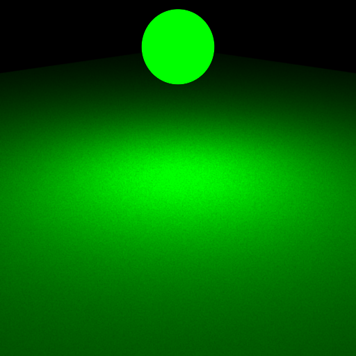
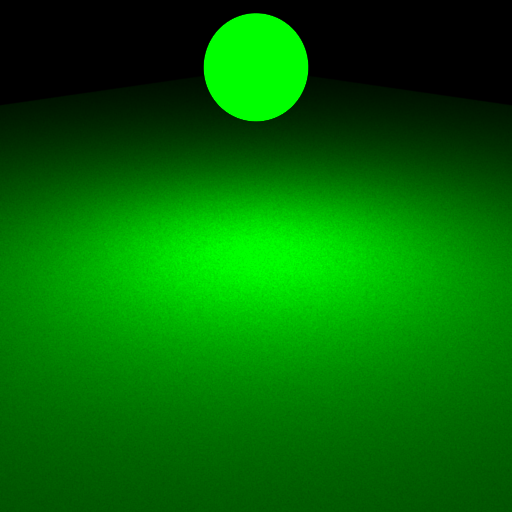
 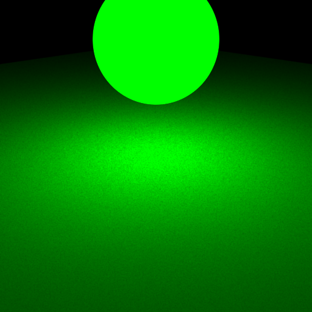
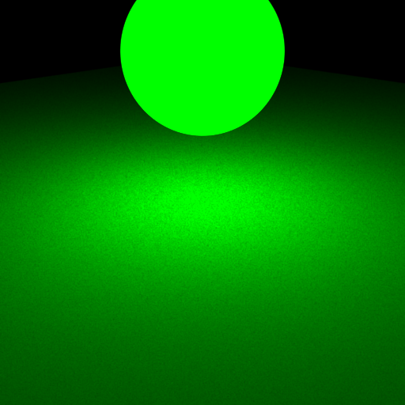
 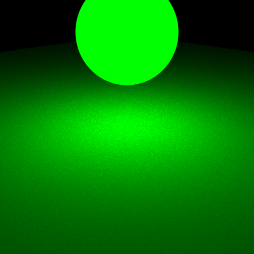
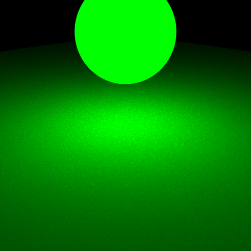


Part 2: BRDF Sampling
Integrator Implementation
Files modified: src/direct_mats.cpp
First identify whether the intersection is an emitter. Then sample BRDF term on the intersection point.
Microfacet BRDF
Files modified: src/microfacet.cpp
Microfacet BRDF Evaluation and Microfacet BRDF Sampling are calculated by the formula that given by the task description. Some functions are realized by Microfacet::evalBeckmann(), Microfacet::smithBeckmannG1(), frenel().
Validation
The comparison of my rendering to reference images shows as follows:
 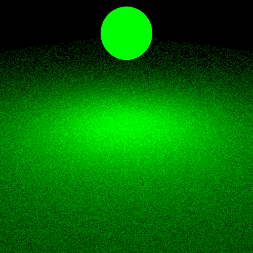
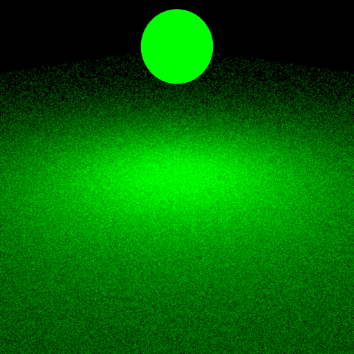
 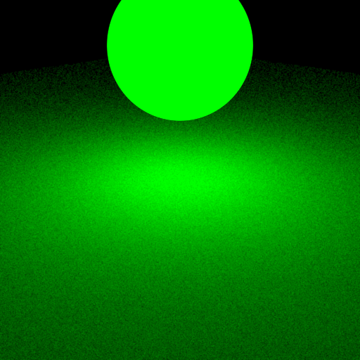
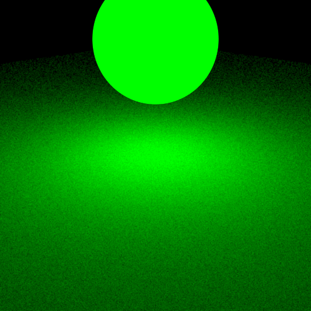
 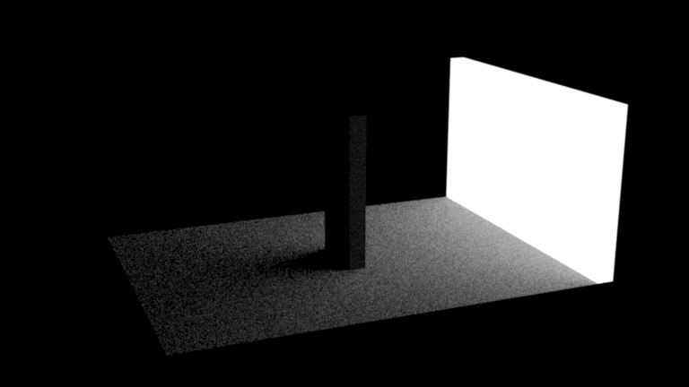
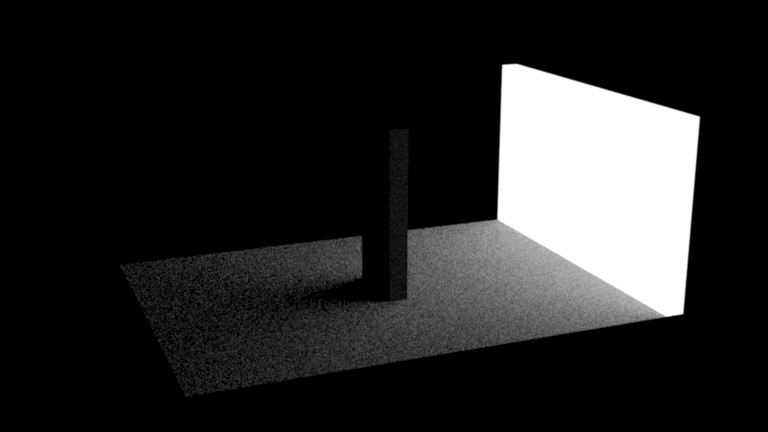
 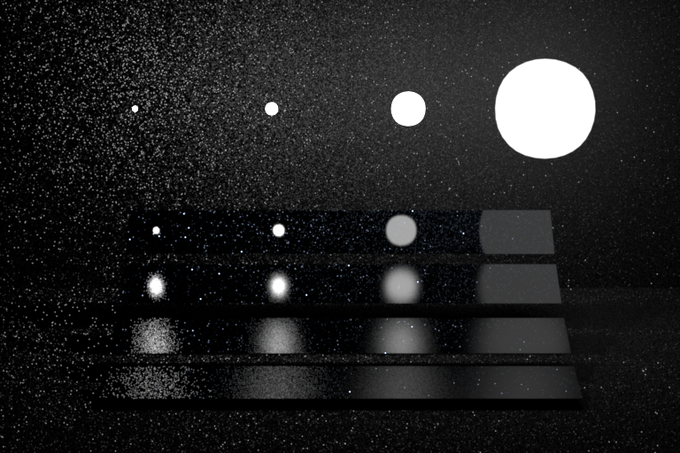
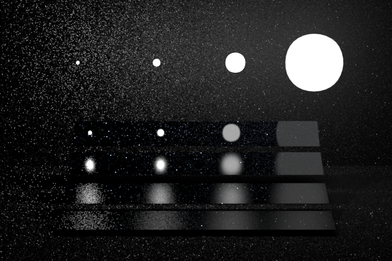
Part 3: Multiple Importance Sampling
Files modified: src/direct_mis.cpp
Integrator Implementation
Mix the two integrators together with the weights.
Validation
Test results are all passed.
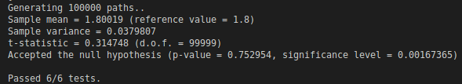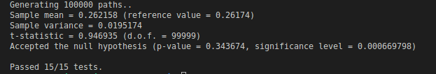
Image Validation
The 4-way comparison for each of the 2 scenes are shown below. For each scene compare your 3 integrators (direct_ems, direct_mats, direct_mis) with the reference MIS rendering.

 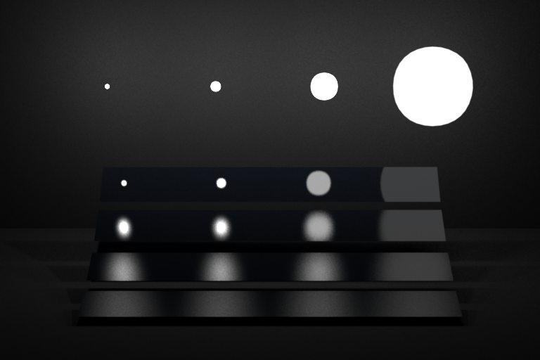
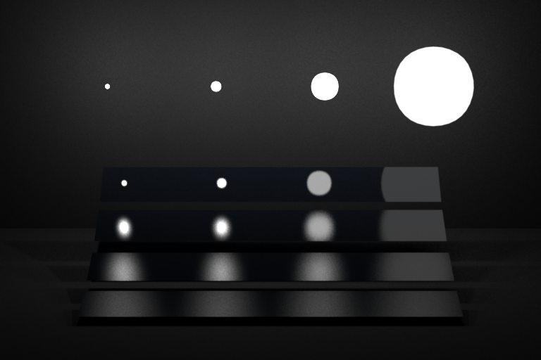